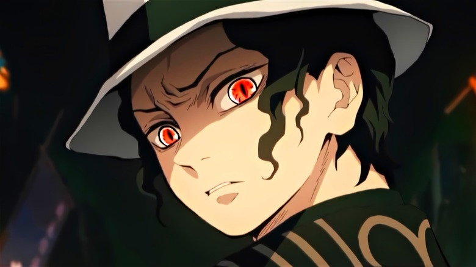
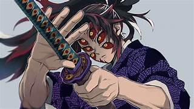
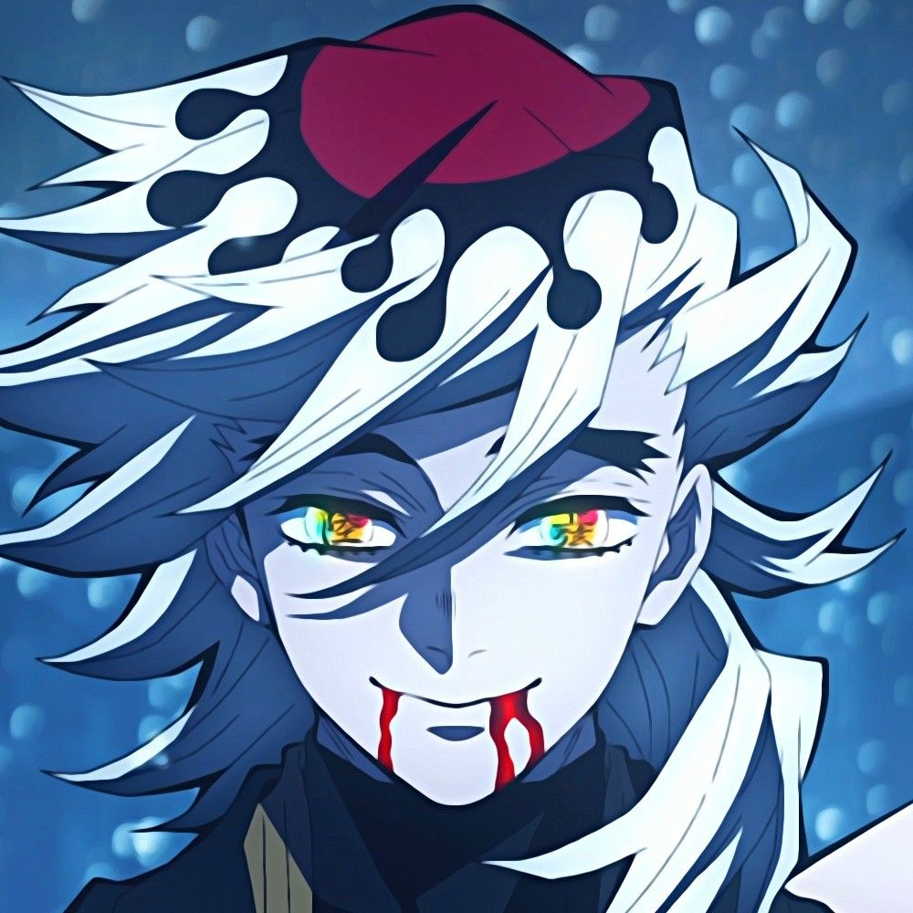
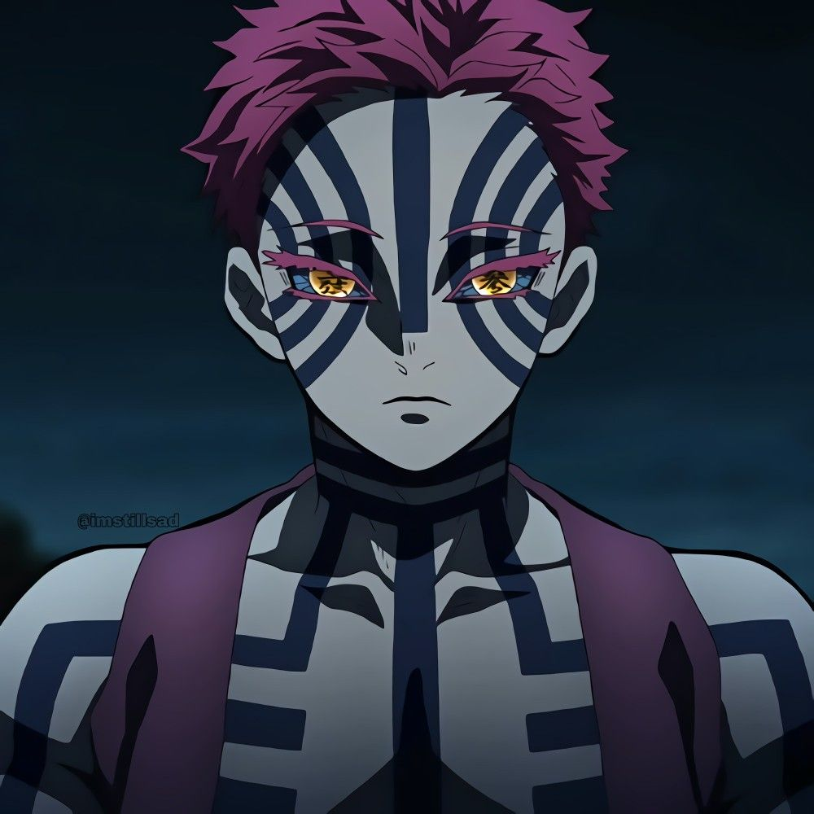
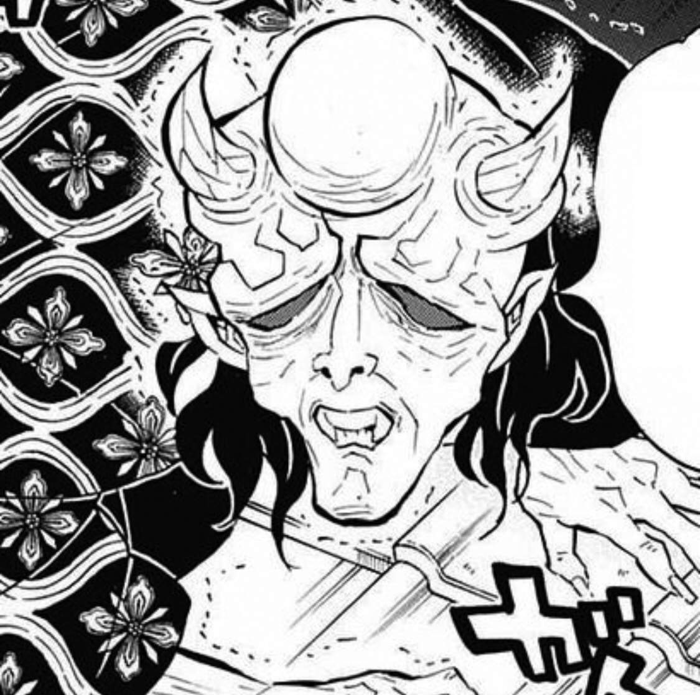
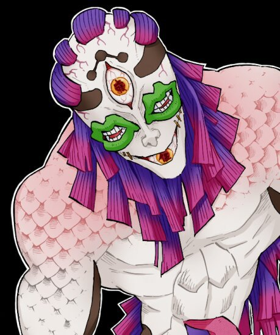
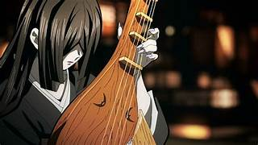
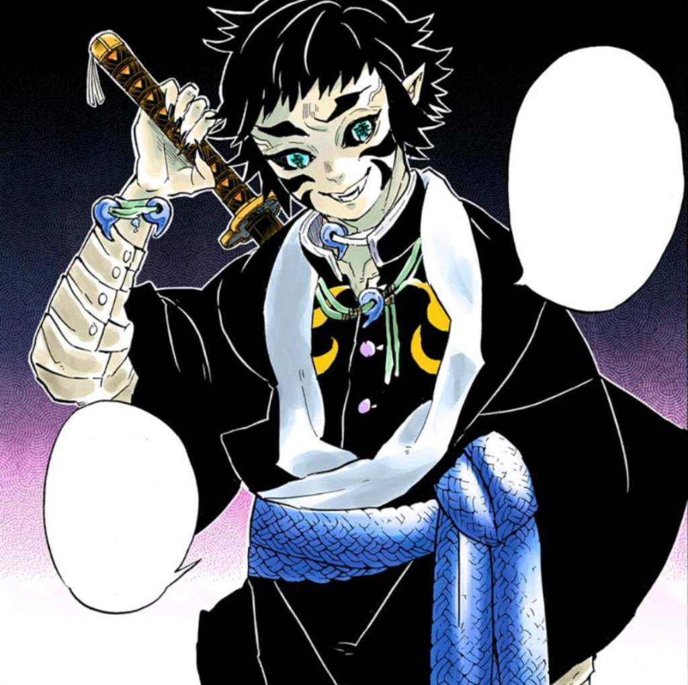

REI DOS ONIS
ele é o Rei dos Demônios, o primeiro de sua raça, sendo também o progenitor de todos os outros demônios existentes.
Há um milênio atrás, Muzan foi transformado em um demônio enquanto procurava a cura para uma doença terminal que o acometia, a partir de então o seu objetivo era viver sem o medo da morte e ganhar a imortalidade.
Outro objetivo pessoal era livrar-se de sua fraqueza a luz solar, que poderia ser resolvida de duas formas: a primeira seria encontrar uma planta chamada Lírio Aranha Azul,
e a segunda seria criar mais demônios na esperança de que um deles alcançasse imunidade a luz solar.
OS DOZE KIZUKI
KOKUSHIBOU
oni mais poderoso entre os Doze Kizuki, abaixo somente do próprio Muzan e sendo o mais leal a ele.
misterioso e compenetrado, Kokushibou é na verdade o irmão mais velho do lendário espadachim Yoriichi Tsugikuni, o primeiro usuário da respiração do sol, sendo também antepassado de Muichiro Tokito, o pilar da névoa.
Embora seja um demônio, Kokushibou luta utilizando principalmente suas habilidades como espadachim e a técnica da respiração da lua ao invés de depender inteiramente de seus poderes sobrenaturais.
Ele também tem um profundo senso de honra, demonstrando respeito aos oponentes que ele julga dignos.
DOUMA
Nascido totalmente sem emoções, Douma é um dos maiores vilões da série, sendo responsável direto pelas mortes de Kotoha, a mãe de Inosuke, e de Kanae, a irmã mais velha da hashira Shinobu Kocho, o que os torna arqui-inimigos.
Apesar de não sentir nada, ele é carismático e amigável, usando isso para devorar suas vítimas, especialmente os membros da seita "Paraíso Eterno", da qual ele é o líder.
É um psicopata total, que permaneceu impassível mesmo diante da morte trágica de seus pais diante de seus olhos, reclamando apenas do cheiro de sangue que pairava no quarto.
Sua principal arma são seus leques, que ele utiliza tanto para defesa quanto para ataque.
AKAZA
Tendo sido transformado em oni por Muzan em pessoa, Akaza é teimoso e sanguinário, tendo um profundo desejo de lutar contra adversários fortes ao mesmo tempo em que desdenha e tortura os fracos.
Nem mesmo seus companheiros Kizuki estão à salvo, já que ele vê a todos como rivais.
Apesar de sua crueldade, ele segue seu próprio código de honra, que inclui jamais devorar mulheres, mesmo ficando muito mais forte se o fizer.
Ele também tem uma total aversão a si próprio, valorizando outros indivíduos muito mais que a si mesmo, talvez por memórias reprimidas de sua vida passada como um humano.
Ele é um dos principais vilões do filme Kimetsu No Yaiba: Mugen Train.
HANTENGU
Além de Gyokko, Hantengu também participa do arco dos forjadores de espadas, sendo o superior dele e a principal ameaça a ser combatida.
É conhecido principalmente por sua frieza e covardia, já que quando era um humano, usava sua idade avançada para se fingir de inocente e assassinar pessoas para não ser responsabilizado por seus crimes.
Além de sua própria personalidade Hantengu tem mais seis diferentes, todas com poderes próprios e criadas para que ele continuasse culpando outras pessoas e mentindo para si mesmo de que era totalmente inocente.
GYOKO
Gyokko é um dos antagonistas do arco da vila dos forjadores de espadas. De todos os Kizuki, ele tem a forma mais grotesca, tendo bocas no lugar dos olhos, um torso que se estende como uma cauda e vários braços pequenos de criança cobertos por escamas.
Egocêntrico e sádico, Gyokko é bastante arrogante e perde rapidamente sua paciência com aqueles que não sabem apreciar sua "arte", que inclui mutilar pobres camponeses vivos e trocar seus membros entre si enquanto os empala com espadas samurai.
DAKI E GYUTAROU
Os irmãos Daki e Gyuutarou são os principais antagonistas do arco do distrito da luz vermelha, o próximo a ser adaptado para o anime.
Ambos são extremamente cruéis e mesquinhos, mas sentem um amor fraternal verdadeiro entre si.
Juntos, eles podem ser considerados como as versões malignas de Tanjiro e Nezuko.
Daki é mimada, vingativa e sente um prazer satânico em torturar suas vítimas e fazê-las sofrer, sendo extremamente exigente e intolerante com falhas.
Já Gyuutarou é tão ruim quanto, e sente uma extrema inveja daqueles que nasceram em uma situação melhor que ele.

ONIS SUBSTITUTOS
- Nakime
- Kaigaku
NAKIME
Quando Hantengu é derrotado pelos caçadores de demônios, Muzan "promove" Nakime à posição de quarta lua superior.
Calma e séria, ela raramente fala, preferindo se fazer entender através de seus atos cruéis e seu jeito de lutar.
Ela também é cegamente leal a seu mestre, usando suas habilidades de oni para o bem dele.
Consegue controlar totalmente a fortaleza dimensional infinita, quartel general dos demônios, podendo mudar qualquer um de lugar quando bem entender.
KAIGAKU
Quando Daki e Gyuutarou são derrotados, Kaigaku ocupa seu lugar como a sexta lua superior.
Ele era originalmente membro da tropa dos caçadores de demônios e companheiro de treinos de Zenitisu, mas trai a ele e a seu mestre ao se deixar converter por Kokushibou.
Traiçoeiro e invejoso, ele enveredou para o caminho do mal após seu mestre lhe dizer que Zenitsu seria seu sucessor por direito, o que ajudou a aflorar sua personalidade maligna.
Por tudo isso, ele se tornou o arqui-inimigo de Zenitsu, sendo finalmente decapitado por ele em sua batalha final.
QUER MAIS CONTEÚDO DESSE TIPO?
CLIQUE AQUI PARA PROSSEGUIRREFERÊNCIAS TIRADAS DO FANDOM OFICIAL